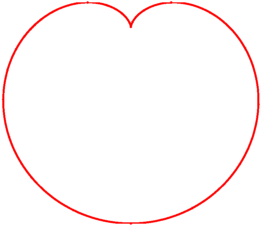

Happy Valentine's Day to all Chebfun users!
t = chebfun('t',[-pi pi]);
x = 16*sin(t).^3;
y = 13*cos(t)-5*cos(2*t)-2*cos(3*t)-1*cos(4*t);
fill(x,y,'.-r'); axis equal
hold on
plot(12.5*scribble('Happy Valentine''s Day!'),'k')
hold off
axis equal off
This 'heart curve' can be found on Wolfram's MathWorld site [1], where its area is computed. We do the same, and compare the result:
z = x+1i*y; A = abs(sum(x.*diff(y))) err = A - 180*pi
A =
5.654866776461627e+02
err =
-1.136868377216160e-13
Here are some more heart curves that can be found in [1]:
Heart eqn 1
t = chebfun('t',[-pi pi]);
r = 1-sin(t);
[x1 y1] = pol2cart(t,r);
plot(x1,y1,'.-r')
axis equal off
A1 = abs(sum(x1.*diff(y1)))
err = A1-3*pi/2 % Note, this is A2 on [1]!
A1 =
4.712388980384690
err =
0

Heart eqn 5
t = chebfun('t',[-pi pi]);
r = 2 - 2*sin(t)+sin(t).*sqrt(abs(cos(t))+.1)./(sin(t)+1.4);
[x5 y5] = pol2cart(t,r);
plot(x5,y5,'.-r')
axis equal off
A5 = abs(sum(x5.*diff(y5))) % Note, different from [1] was we include .1 in sqrt
A5 = 11.645555308722980